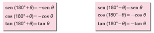

A partir de las figuras que se muestran a la derecha, se sabe que:
- 1. El lado terminal de θ es OP, el lado terminal de 180°+ θ es OQ (figura 1) y el lado terminal de 180°- θ es OR (figura 2).
- 2. Las coordenadas de P son (x,y), las de Q son (-x,-y) y las de R son (-x, y).
Por otra parte, anteriormente se estableció que para un ángulo cualquiera 0 se tiene que:
senθ = y, cosθ = x, tanθ = y/x
Simplifique las siguientes fracciones algebraicas:
Asi que, para los ángulos 180°+ θ y 180° - θ se obtiene
Ejercicios
Determine los siguientes valores utilizando las relaciones anteriores:
- 1. sen240°
- 2. cos 210°
- 3. tan 225°